%reload_ext autoreload
%autoreload 2
%matplotlib inline
!/opt/bin/nvidia-smi
!nvcc --versionHRNet with Semtorch
Libs setup and imports
%pip install fastai==2.4.1
%pip install lapixdl==0.8.11
%pip install -U albumentations
%pip install SemTorch
%pip install opencv-python-headless==4.1.2.30import random
from pathlib import Path
import albumentations as A
import cv2
import imgaug
import numpy as np
import torch
from fastai.vision.all import (
AddMaskCodes,
Counter,
CrossEntropyLossFlat,
Datasets,
FuncSplitter,
Image,
IntToFloatTensor,
ItemTransform,
Metric,
PILImage,
PILMask,
SaveModelCallback,
ShowGraphCallback,
ToTensor,
Transform,
flatten_check,
foreground_acc,
get_image_files,
is_listy,
params,
)
from lapixdl.evaluation.model import Result
from lapixdl.evaluation.visualize import show_segmentations
from semtorch import get_segmentation_learner
# Fix seed
random.seed(81615)
imgaug.seed(81615)Utils
def read_mask_and_simplify_normal_nuclei(mask_path: Path):
mask_arr = np.array(PILMask.create(mask_path))
# em_divisao || reacional = saudavel
mask_arr[(mask_arr == 5) | (mask_arr == 7)] = 2
return PILMask.create(mask_arr)# Fastai Transformers
class SegmentationAlbumentationsTransform(ItemTransform):
split_idx = 0 # Train only
order = 2 # After resize
def __init__(self, aug):
self.aug = aug
def encodes(self, x):
img, mask = x
aug = self.aug(image=np.array(img), mask=np.array(mask))
return PILImage.create(aug["image"]), PILMask.create(aug["mask"])
class ImageResizer(Transform):
order = 1
"Resize image to `size` using `resample`"
def __init__(self, size, resample=Image.NEAREST):
if not is_listy(size):
size = (size, size)
self.size, self.resample = (size[1], size[0]), resample
def encodes(self, o: PILImage):
return o.resize(size=self.size, resample=self.resample)# Validation metrics
class SSMetricBase(Metric):
def __init__(self, axis=1):
self.axis = axis
def reset(self):
self.intersection = {}
self.total_area = {}
def accumulate(self, learn):
pred, targ = flatten_check(learn.pred.argmax(dim=self.axis), learn.y)
for c in range(learn.pred.shape[self.axis]):
# Get the prediction and target binary mask for `c` category
p = torch.where(pred == c, 1, 0)
t = torch.where(targ == c, 1, 0)
# Compute the interpolation and total area between GT and prediction data
# * and + is logical (* is and, + is or) operator between torch matrix
intersection_ = (p * t).float().sum().item()
total_area_ = (p + t).float().sum().item()
if c in self.intersection:
self.intersection[c] += intersection_
self.total_area[c] += total_area_
else:
self.intersection[c] = intersection_
self.total_area[c] = total_area_
class mDSC(SSMetricBase):
"Mean of Dice Similarity Coefficients (DSC) metric for multicategory target in segmentation"
@property
def value(self):
def DSC(intersection, total_area):
return 2.0 * intersection / total_area if total_area > 0 else np.nan
return np.nanmean(
[DSC(self.intersection[c], self.total_area[c]) for c in self.intersection]
)
class mIoU(SSMetricBase):
"Mean of Intersection over Union (IoU) metric for multicategory target in segmentation"
@property
def value(self):
def IoU(intersection, total_area):
union = total_area - intersection
return intersection / union if union > 0 else np.nan
return np.nanmean(
[IoU(self.intersection[c], self.total_area[c]) for c in self.intersection]
)
def acc_metric(ipt, target):
return foreground_acc(ipt, target, bkg_idx=0)Paths and metadata configuration
Fill the paths accordingly to the structure of the dataset and the output directories.
To load the data from google drive (on google colab), use:
from google.colab import drive
drive.mount("/content/gdrive")path_dataset = Path("[dataset root folder]")
path_lbl = (
path_dataset / "multiclass_masks"
) # Masks folder. All masks must be in the root folder.
path_img = (
path_dataset / "images"
) # Images root folder. The images must be inside the train, val and test folders.
path_output = Path("[output root folder]")
path_models = path_output / "Models/segmentation/multiclass/models_hrnet_18_v41"
path_test_img = path_img / "test"
test_image_files = get_image_files(path_test_img)# Creates a list with all the images filenames
fnames = get_image_files(path_img, folders=["train", "val"])
# Util to get mask path by image path
def get_mask(path):
return path_lbl / f"{path.stem}{path.suffix}"
# Image size
mask = PILMask.create(get_mask(fnames[1]))
src_size = np.array(mask.shape)
src_sizearray([1200, 1600])# Defines the names of the dataset classes. It can be defined using an array instead of loading it from a file.
codes = np.loadtxt(path_dataset / "codes_multiclasse.txt", dtype=str)
codes[0] = "background"
codesarray(['background', 'anormal', 'saudavel', 'fora_de_foco', 'sanguinea',
'em_divisao', 'nao_definida', 'reacional'], dtype='<U14')Data Analisys
Show random image GT using the LapixDL library
# Shows the mask count
masks_fnames = get_image_files(path_lbl)
len(masks_fnames)img_f = fnames[random.randint(0, len(fnames) - 1)]
print(img_f)
img = PILImage.create(img_f)
mask = read_mask_and_simplify_normal_nuclei(get_mask(img_f))
fig, axes = show_segmentations([Result(np.array(img), np.array(mask))], codes)/content/gdrive/Shareddrives/Citologia Computacional/Datasets/UFSC OCPap: Papanicolaou Stained Oral Cytology Dataset/current/images/train/2019_07_10__14_48__0045_b0s0c0x170085-1600y63882-1200m8909.tiff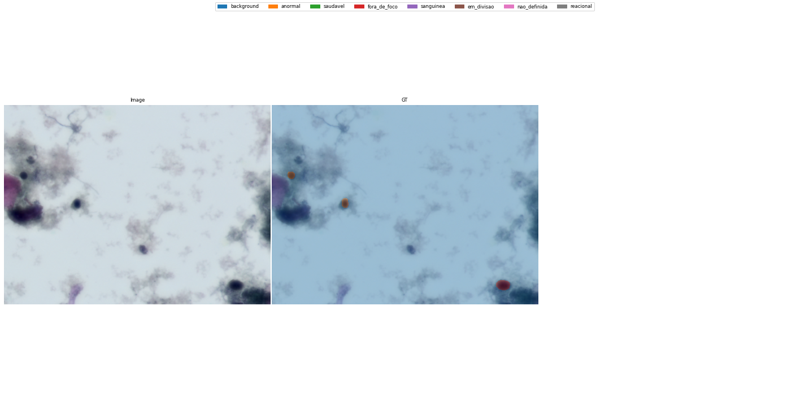
Train pipeline setup
Architecture Definition
The complete list of supported models is available in the Semtorch repo: https://github.com/WaterKnight1998/SemTorch#supported-configs
architecture = "hrnet"
backbone = "hrnet_w18"Pipeline
# Augmentations setup
def zoom_augmentation(img_shape):
return A.Compose(
[
A.RandomScale(scale_limit=(0, 0.1), p=0.75),
A.CenterCrop(img_shape[0], img_shape[1]),
]
)
def augmentations(img_shape):
return A.Compose(
[
A.VerticalFlip(p=0.5),
A.HorizontalFlip(p=0.5),
A.Rotate((-90, 90), p=0.75, interpolation=cv2.INTER_NEAREST),
zoom_augmentation(img_shape),
A.RandomBrightnessContrast(0.1, 0.1, p=0.75),
A.Affine(p=0.75, shear=0.2),
]
)tfms = [
[PILImage.create],
[get_mask, read_mask_and_simplify_normal_nuclei, AddMaskCodes(codes)],
]
folder_split = FuncSplitter(lambda fname: Path(fname).parent.name == "val")
src = Datasets(fnames, tfms, splits=folder_split(fnames))Training
miou = mIoU()
mdsc = mDSC()
metrics = [acc_metric, mdsc, miou]# Splitter that tells the learner wich parts of the network it should freeze
def hrnet_splitter(model):
return [params(model.backbone), params(model.head)]
def get_learner(data, load_model=None, unfreeze: bool = False):
"""Creates and setups the learner for each step of the training approach.
Args:
data: Dataloader.
load_model (str): Path to the model to be loaded.
unfreeze (bool): Indicates if the model should be unfreezed. Defaults to False.
"""
learn = get_segmentation_learner(
dls=data,
number_classes=len(codes),
segmentation_type="Semantic Segmentation",
architecture_name=architecture,
backbone_name=backbone,
metrics=metrics,
splitter=hrnet_splitter,
pretrained=True,
loss_func=CrossEntropyLossFlat(axis=1),
).to_fp16()
learn.path = path_models
if load_model is not None:
learn.load(load_model, with_opt=True)
if unfreeze:
learn.unfreeze()
return learn1/4 Size
Training the model using 1/4 the size of the images
size = src_size // 4
bs = 32 # Adjust the batch size accordingly to the GPU VRAM capacity
transforms = [
ImageResizer((size[0], size[1])),
ToTensor(),
IntToFloatTensor(),
SegmentationAlbumentationsTransform(augmentations(size)),
]
print(size)[300 400]# Creates the dataloader
data = src.dataloaders(bs=bs, after_item=transforms)# Runs the learning rate finder
get_learner(data).lr_find()/usr/local/lib/python3.7/dist-packages/torch/nn/functional.py:3613: UserWarning: Default upsampling behavior when mode=bilinear is changed to align_corners=False since 0.4.0. Please specify align_corners=True if the old behavior is desired. See the documentation of nn.Upsample for details.
"See the documentation of nn.Upsample for details.".format(mode)SuggestedLRs(valley=0.0012022644514217973)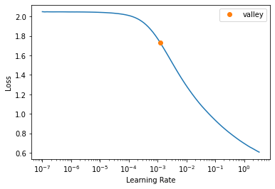
lr = slice(1e-3) # Choose accordingly to the learning rate finder results
wd = 1e-3 # Weight decay
learn = get_learner(data)
callbacks = [
SaveModelCallback(
monitor="m_dsc", fname="best_model_300x400_stg1", with_opt=True
), # Saves the best model as `fname` in `learn.path` considering the metric defined in `monitor`.
ShowGraphCallback(), # Shows the train/validation graph
]
# Train
learn.fit_one_cycle(15, lr_max=lr, wd=wd, cbs=callbacks)Downloading /root/.cache/torch/checkpoints from https://dl.dropboxusercontent.com/s/cewi4owfrw00oza/hrnetv2_w18_imagenet_pretrained.pth?dl=0...100%|██████████| 83749/83749 [00:07<00:00, 11172.95KB/s]
75.00% [3/4 1:23:25<27:48]
| epoch | train_loss | valid_loss | acc_metric | m_dsc | m_io_u | time |
|---|---|---|---|---|---|---|
| 0 | 0.019478 | 0.017733 | 0.390553 | 0.402174 | 0.333111 | 40:30 |
| 1 | 0.019704 | 0.019633 | 0.413994 | 0.411727 | 0.334613 | 21:20 |
| 2 | 0.018704 | 0.017806 | 0.441530 | 0.447045 | 0.357830 | 21:28 |
18.92% [28/148 01:39<07:06 0.0188]
/usr/local/lib/python3.7/dist-packages/torch/nn/functional.py:3613: UserWarning: Default upsampling behavior when mode=bilinear is changed to align_corners=False since 0.4.0. Please specify align_corners=True if the old behavior is desired. See the documentation of nn.Upsample for details.
"See the documentation of nn.Upsample for details.".format(mode)Better model found at epoch 0 with m_dsc value: 0.40217360010178566.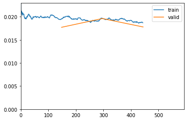
Better model found at epoch 1 with m_dsc value: 0.41172709553684333.
Better model found at epoch 2 with m_dsc value: 0.44704520810653275.get_learner(data, "best_model_300x400_stg1").show_results(
figsize=(20, 10)
) # Shows example results of the trained modelDownloading /root/.cache/torch/checkpoints from https://dl.dropboxusercontent.com/s/cewi4owfrw00oza/hrnetv2_w18_imagenet_pretrained.pth?dl=0...100%|██████████| 83749/83749 [00:07<00:00, 11249.59KB/s]/usr/local/lib/python3.7/dist-packages/torch/nn/functional.py:3613: UserWarning: Default upsampling behavior when mode=bilinear is changed to align_corners=False since 0.4.0. Please specify align_corners=True if the old behavior is desired. See the documentation of nn.Upsample for details.
"See the documentation of nn.Upsample for details.".format(mode)# Load, unfreeze and lr finder for finetunning
get_learner(data, "best_model_300x400_stg1", True).lr_find()/usr/local/lib/python3.7/dist-packages/torch/nn/functional.py:3613: UserWarning: Default upsampling behavior when mode=bilinear is changed to align_corners=False since 0.4.0. Please specify align_corners=True if the old behavior is desired. See the documentation of nn.Upsample for details.
"See the documentation of nn.Upsample for details.".format(mode)SuggestedLRs(valley=9.120108734350652e-05)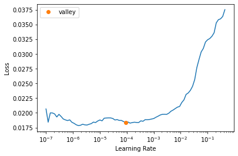
lr = slice(1e-5, 1e-3)
wd = 1e-3
learn = get_learner(data, "best_model_300x400_stg1", True)
callbacks = [
SaveModelCallback(monitor="m_dsc", fname="best_model_300x400_stg2", with_opt=True),
ShowGraphCallback(),
]
# Finetune
learn.fit_one_cycle(15, lr_max=lr, wd=wd, cbs=callbacks)Downloading /root/.cache/torch/checkpoints from https://dl.dropboxusercontent.com/s/cewi4owfrw00oza/hrnetv2_w18_imagenet_pretrained.pth?dl=0...100%|██████████| 83749/83749 [00:06<00:00, 12384.28KB/s]| epoch | train_loss | valid_loss | acc_metric | m_dsc | m_io_u | time |
|---|---|---|---|---|---|---|
| 0 | 0.017846 | 0.017512 | 0.469074 | 0.447522 | 0.361195 | 26:54 |
| 1 | 0.018461 | 0.017120 | 0.447935 | 0.449067 | 0.362541 | 15:05 |
| 2 | 0.017924 | 0.017529 | 0.452952 | 0.450123 | 0.361949 | 15:13 |
| 3 | 0.017640 | 0.016738 | 0.452727 | 0.457236 | 0.367781 | 14:27 |
| 4 | 0.017680 | 0.016834 | 0.447958 | 0.451309 | 0.364288 | 14:26 |
/usr/local/lib/python3.7/dist-packages/torch/nn/functional.py:3613: UserWarning: Default upsampling behavior when mode=bilinear is changed to align_corners=False since 0.4.0. Please specify align_corners=True if the old behavior is desired. See the documentation of nn.Upsample for details.
"See the documentation of nn.Upsample for details.".format(mode)Better model found at epoch 0 with m_dsc value: 0.44752207423613316.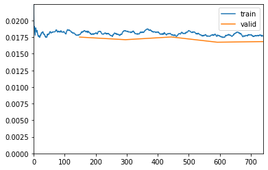
Better model found at epoch 1 with m_dsc value: 0.44906699520777216.
Better model found at epoch 2 with m_dsc value: 0.45012294157900357.
Better model found at epoch 3 with m_dsc value: 0.45723603479745495.get_learner(data, "best_model_300x400_stg2").show_results(
figsize=(20, 30)
) # Shows results of the finetunned model/usr/local/lib/python3.7/dist-packages/torch/nn/functional.py:3613: UserWarning: Default upsampling behavior when mode=bilinear is changed to align_corners=False since 0.4.0. Please specify align_corners=True if the old behavior is desired. See the documentation of nn.Upsample for details.
"See the documentation of nn.Upsample for details.".format(mode)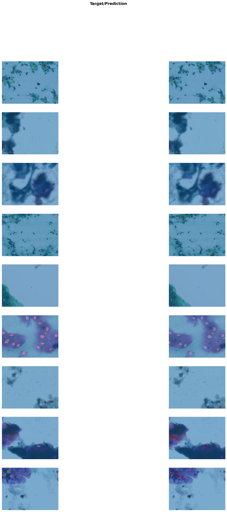
1/2 Size
Training the model using 1/2 the size of the images. All the steps are identical to the 1/4 size training.
size = src_size // 2
bs = 16 # Adjust the batch size accordingly to the GPU VRAM capacity
transforms = [
ImageResizer((size[0], size[1])),
ToTensor(),
IntToFloatTensor(),
SegmentationAlbumentationsTransform(augmentations(size)),
]
print(size)[600 800]data = src.dataloaders(bs=bs, after_item=transforms)get_learner(data, "best_model_300x400_stg2").lr_find()/usr/local/lib/python3.7/dist-packages/torch/nn/functional.py:3613: UserWarning: Default upsampling behavior when mode=bilinear is changed to align_corners=False since 0.4.0. Please specify align_corners=True if the old behavior is desired. See the documentation of nn.Upsample for details.
"See the documentation of nn.Upsample for details.".format(mode)SuggestedLRs(valley=7.585775892948732e-05)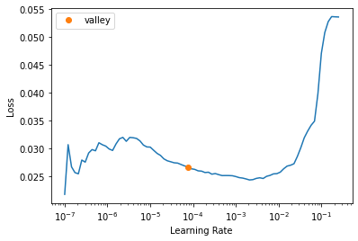
lr = slice(1e-4)
wd = 1e-3
learn = get_learner(data, "best_model_300x400_stg2")
callbacks = [
SaveModelCallback(monitor="m_dsc", fname="best_model_600x800_stg1", with_opt=True),
ShowGraphCallback(),
]
learn.fit_one_cycle(15, lr_max=lr, wd=wd, cbs=callbacks)Downloading /root/.cache/torch/checkpoints from https://dl.dropboxusercontent.com/s/cewi4owfrw00oza/hrnetv2_w18_imagenet_pretrained.pth?dl=0...100%|██████████| 83749/83749 [00:03<00:00, 25012.02KB/s]| epoch | train_loss | valid_loss | acc_metric | m_dsc | m_io_u | time |
|---|---|---|---|---|---|---|
| 0 | 0.018291 | 0.016743 | 0.462024 | 0.465342 | 0.374932 | 29:11 |
| 1 | 0.018471 | 0.016441 | 0.463848 | 0.478000 | 0.384668 | 22:14 |
| 2 | 0.017385 | 0.016192 | 0.462589 | 0.480557 | 0.385102 | 22:09 |
| 3 | 0.017479 | 0.016003 | 0.465820 | 0.477123 | 0.383972 | 22:28 |
/usr/local/lib/python3.7/dist-packages/torch/nn/functional.py:3613: UserWarning: Default upsampling behavior when mode=bilinear is changed to align_corners=False since 0.4.0. Please specify align_corners=True if the old behavior is desired. See the documentation of nn.Upsample for details.
"See the documentation of nn.Upsample for details.".format(mode)Better model found at epoch 0 with m_dsc value: 0.46534188469419985.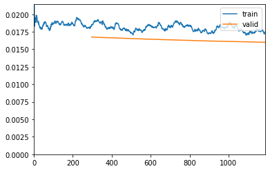
Better model found at epoch 1 with m_dsc value: 0.4779997582986402.
Better model found at epoch 2 with m_dsc value: 0.48055711441368504.get_learner(data, "best_model_600x800_stg1").show_results(figsize=(20, 10))/usr/local/lib/python3.7/dist-packages/torch/nn/functional.py:3613: UserWarning: Default upsampling behavior when mode=bilinear is changed to align_corners=False since 0.4.0. Please specify align_corners=True if the old behavior is desired. See the documentation of nn.Upsample for details.
"See the documentation of nn.Upsample for details.".format(mode)get_learner(data, "best_model_600x800_stg1", True).lr_find()/usr/local/lib/python3.7/dist-packages/torch/nn/functional.py:3613: UserWarning: Default upsampling behavior when mode=bilinear is changed to align_corners=False since 0.4.0. Please specify align_corners=True if the old behavior is desired. See the documentation of nn.Upsample for details.
"See the documentation of nn.Upsample for details.".format(mode)SuggestedLRs(valley=0.00013182566908653826)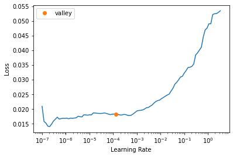
lr = slice(1e-5, 1e-3)
wd = 1e-3
learn = get_learner(data, "best_model_600x800_stg1", True)
callbacks = [
SaveModelCallback(monitor="m_dsc", fname="best_model_600x800_stg2", with_opt=True),
ShowGraphCallback(),
]
learn.fit_one_cycle(15, lr_max=lr, wd=wd, cbs=callbacks)| epoch | train_loss | valid_loss | acc_metric | m_dsc | m_io_u | time |
|---|---|---|---|---|---|---|
| 0 | 0.018245 | 0.016636 | 0.490921 | 0.475744 | 0.381975 | 22:14 |
| 1 | 0.017122 | 0.016223 | 0.457983 | 0.473469 | 0.380990 | 21:56 |
| 2 | 0.017755 | 0.016348 | 0.473422 | 0.481747 | 0.387075 | 22:11 |
| 3 | 0.017285 | 0.015955 | 0.424341 | 0.462387 | 0.376053 | 22:08 |
| 4 | 0.017081 | 0.015345 | 0.440552 | 0.472355 | 0.379435 | 22:34 |
| 5 | 0.017156 | 0.016243 | 0.472813 | 0.452512 | 0.365933 | 22:14 |
| 6 | 0.016948 | 0.015419 | 0.470174 | 0.487429 | 0.393419 | 22:12 |
| 7 | 0.017528 | 0.015798 | 0.486376 | 0.490740 | 0.394861 | 22:20 |
| 8 | 0.017034 | 0.015397 | 0.452266 | 0.469551 | 0.378689 | 22:10 |
| 9 | 0.016764 | 0.015862 | 0.484302 | 0.479674 | 0.386384 | 22:15 |
| 10 | 0.016830 | 0.015427 | 0.468948 | 0.469365 | 0.378911 | 22:12 |
| 11 | 0.016509 | 0.015104 | 0.456177 | 0.489937 | 0.394035 | 22:15 |
| 12 | 0.017009 | 0.015190 | 0.472760 | 0.485614 | 0.391074 | 22:06 |
| 13 | 0.016283 | 0.015095 | 0.472655 | 0.488053 | 0.393123 | 22:05 |
| 14 | 0.015599 | 0.015167 | 0.478586 | 0.489382 | 0.393912 | 22:09 |
/usr/local/lib/python3.7/dist-packages/torch/nn/functional.py:3613: UserWarning: Default upsampling behavior when mode=bilinear is changed to align_corners=False since 0.4.0. Please specify align_corners=True if the old behavior is desired. See the documentation of nn.Upsample for details.
"See the documentation of nn.Upsample for details.".format(mode)Better model found at epoch 0 with m_dsc value: 0.475744341934166.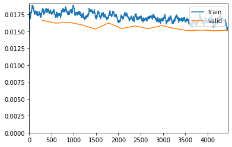
Better model found at epoch 2 with m_dsc value: 0.48174740581878456.
Better model found at epoch 6 with m_dsc value: 0.48742872453866326.
Better model found at epoch 7 with m_dsc value: 0.49074033954348456.get_learner(data, "best_model_600x800_stg2").show_results(figsize=(20, 10))/usr/local/lib/python3.7/dist-packages/torch/nn/functional.py:3613: UserWarning: Default upsampling behavior when mode=bilinear is changed to align_corners=False since 0.4.0. Please specify align_corners=True if the old behavior is desired. See the documentation of nn.Upsample for details.
"See the documentation of nn.Upsample for details.".format(mode)Full Size
Training the model using the full size of the images. All the steps are identical to the 1/4 size training.
size = src_size
bs = 4 # Adjust the batch size accordingly to the GPU VRAM capacity
transforms = [
ToTensor(),
IntToFloatTensor(),
SegmentationAlbumentationsTransform(augmentations(size)),
]
print(size)[1200 1600]data = src.dataloaders(bs=bs, after_item=transforms)get_learner(data, "best_model_600x800_stg2").lr_find()/usr/local/lib/python3.7/dist-packages/torch/nn/functional.py:3613: UserWarning: Default upsampling behavior when mode=bilinear is changed to align_corners=False since 0.4.0. Please specify align_corners=True if the old behavior is desired. See the documentation of nn.Upsample for details.
"See the documentation of nn.Upsample for details.".format(mode)SuggestedLRs(valley=8.31763736641733e-06)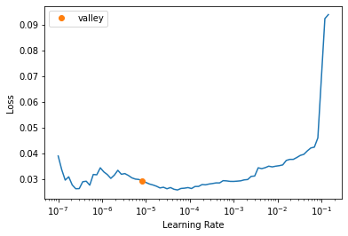
lr = slice(1e-5)
wd = 1e-3
learn = get_learner(data, "best_model_600x800_stg2")
callbacks = [
SaveModelCallback(
monitor="m_dsc", fname="best_model_1200x1600_stg1", with_opt=True
),
ShowGraphCallback(),
]
learn.fit_one_cycle(15, lr_max=lr, wd=wd, cbs=callbacks)| epoch | train_loss | valid_loss | acc_metric | m_dsc | m_io_u | time |
|---|---|---|---|---|---|---|
| 0 | 0.018603 | 0.016302 | 0.427209 | 0.461610 | 0.372249 | 1:18:19 |
/usr/local/lib/python3.7/dist-packages/torch/nn/functional.py:3613: UserWarning: Default upsampling behavior when mode=bilinear is changed to align_corners=False since 0.4.0. Please specify align_corners=True if the old behavior is desired. See the documentation of nn.Upsample for details.
"See the documentation of nn.Upsample for details.".format(mode)Better model found at epoch 0 with m_dsc value: 0.4616104145722171.
get_learner(data, "best_model_1200x1600_stg1").show_results(
figsize=(20, 10), vmax=len(codes)
)/usr/local/lib/python3.7/dist-packages/torch/nn/functional.py:3613: UserWarning: Default upsampling behavior when mode=bilinear is changed to align_corners=False since 0.4.0. Please specify align_corners=True if the old behavior is desired. See the documentation of nn.Upsample for details.
"See the documentation of nn.Upsample for details.".format(mode)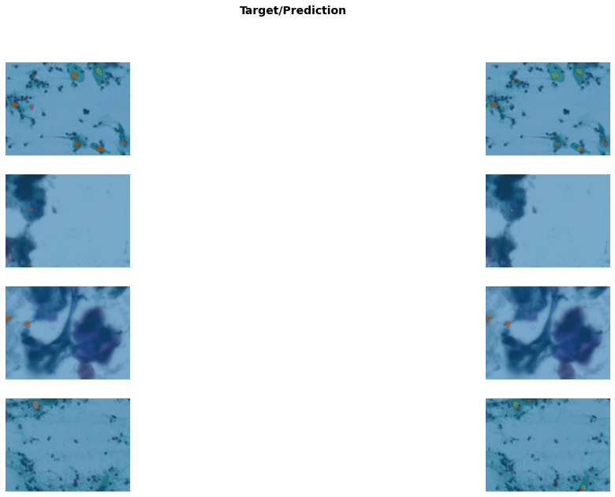
get_learner(data, "best_model_1200x1600_stg1", True).lr_find()/usr/local/lib/python3.7/dist-packages/torch/nn/functional.py:3613: UserWarning: Default upsampling behavior when mode=bilinear is changed to align_corners=False since 0.4.0. Please specify align_corners=True if the old behavior is desired. See the documentation of nn.Upsample for details.
"See the documentation of nn.Upsample for details.".format(mode)SuggestedLRs(valley=1.5848931980144698e-06)
lr = slice(1e-6, 1e-5)
wd = 1e-3
learn = get_learner(data, "best_model_1200x1600_stg1", True)
callbacks = [
SaveModelCallback(
monitor="m_dsc", fname="best_model_1200x1600_stg2", with_opt=True
),
ShowGraphCallback(),
]
learn.fit_one_cycle(15, lr_max=lr, wd=wd, cbs=callbacks)Downloading /root/.cache/torch/checkpoints from https://dl.dropboxusercontent.com/s/cewi4owfrw00oza/hrnetv2_w18_imagenet_pretrained.pth?dl=0...100%|██████████| 83749/83749 [00:03<00:00, 21976.96KB/s]| epoch | train_loss | valid_loss | acc_metric | m_dsc | m_io_u | time |
|---|---|---|---|---|---|---|
| 0 | 0.018219 | 0.015731 | 0.446651 | 0.472233 | 0.381300 | 1:35:26 |
/usr/local/lib/python3.7/dist-packages/torch/nn/functional.py:3613: UserWarning: Default upsampling behavior when mode=bilinear is changed to align_corners=False since 0.4.0. Please specify align_corners=True if the old behavior is desired. See the documentation of nn.Upsample for details.
"See the documentation of nn.Upsample for details.".format(mode)Better model found at epoch 0 with m_dsc value: 0.47223344894062763.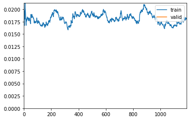
get_learner(data, "best_model_1200x1600_stg2").show_results(figsize=(20, 10))/usr/local/lib/python3.7/dist-packages/torch/nn/functional.py:3613: UserWarning: Default upsampling behavior when mode=bilinear is changed to align_corners=False since 0.4.0. Please specify align_corners=True if the old behavior is desired. See the documentation of nn.Upsample for details.
"See the documentation of nn.Upsample for details.".format(mode)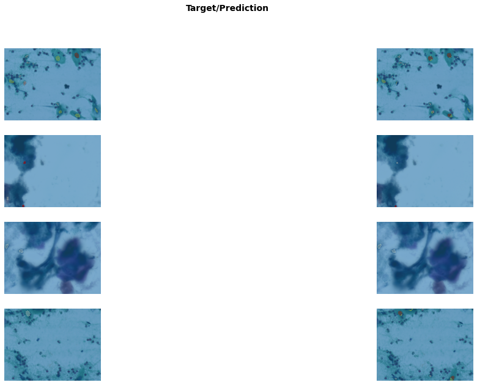
Test
Run the metrics evaluations on the test set
Evaluation on pixel-level
from lapixdl.evaluation.evaluate import evaluate_segmentationdef gt_mask_iterator_from_image_files(fnames, size):
"""Creates a iterator of numpy masks of a given size from a list of filenames."""
for fname in fnames:
yield np.array(PILMask.create(get_mask(fname)).resize((size[1], size[0])))
def pred_mask_iterator_from_image_files(fnames, size, predict):
"""Creates a iterator of predicted numpy masks of a given size from applying a predictor in a list of filenames."""
for fname in fnames:
res = predict(fname)
yield np.array(res[0])
def evaluate_on_image_size(size):
"""Calculates the metrics for a given image size using the models trained in this notebook."""
# Setup predictor
transforms = [ImageResizer((size[0], size[1])), ToTensor(), IntToFloatTensor()]
tfms = [[PILImage.create], [get_mask, PILMask.create, AddMaskCodes(codes)]]
src = Datasets(test_image_files, tfms)
test_dl = src.dataloaders(bs=1, after_item=transforms)
learn = get_segmentation_learner(
dls=test_dl,
number_classes=len(codes),
segmentation_type="Semantic Segmentation",
architecture_name=architecture,
backbone_name=backbone,
metrics=metrics,
splitter=hrnet_splitter,
pretrained=True,
loss_func=CrossEntropyLossFlat(axis=1),
).to_fp16()
learn.path = path_models
learn.load(f"best_model_{size[0]}x{size[1]}_stg2", with_opt=False)
# Setups iterators to be compatible with the LapixDL library
gt_masks = gt_mask_iterator_from_image_files(test_image_files, size)
pred_masks = pred_mask_iterator_from_image_files(
test_image_files, size, learn.predict
)
# Runs the evaluation using the LapixDL library
eval = evaluate_segmentation(gt_masks, pred_masks, codes)
eval.show_confusion_matrix()
return eval# Evaluates on full size
eval_1200_1600 = evaluate_on_image_size((1200, 1600))
eval_1200_1600.to_dataframe()/usr/local/lib/python3.7/dist-packages/torch/nn/functional.py:3613: UserWarning: Default upsampling behavior when mode=bilinear is changed to align_corners=False since 0.4.0. Please specify align_corners=True if the old behavior is desired. See the documentation of nn.Upsample for details.
"See the documentation of nn.Upsample for details.".format(mode)
/usr/local/lib/python3.7/dist-packages/ipykernel_launcher.py:36: RuntimeWarning: Mean of empty slice
/usr/local/lib/python3.7/dist-packages/ipykernel_launcher.py:46: RuntimeWarning: Mean of empty slice Average background anormal \
Accuracy 0.993887 0.995437 0.997409
Recall 0.352973 0.9985863260107417 0.6131005101515782
Precision 0.377342 0.996818 0.580605
Specificity 0.951713 0.616664404355576 0.9986128335705663
F-Score 0.342066 0.997701 0.596411
FPR 0.048287 0.383336 0.001387
IoU 0.273410 0.995413 0.424918
IoU w/o Background 0.170267 NaN NaN
TP NaN 1975632417 3818962
TN NaN 10144579 1985892477
FP NaN 6306150 2758590
FN NaN 2796854 2409971
saudavel fora_de_foco \
Accuracy 0.99869 0.997409
Recall 0.8423639160130766 0.0961497625273992
Precision 0.526514 0.486677
Specificity 0.9989143515457273 0.9997378945731008
F-Score 0.648 0.160576
FPR 0.001086 0.000262
IoU 0.47929 0.087297
IoU w/o Background NaN NaN
TP 2404842 494449
TN 1989862488 1989215991
FP 2162639 521521
FN 450031 4648039
sanguinea em_divisao nao_definida reacional
Accuracy 0.999332 0.999978 0.99999 0.999529
Recall 0.2735851760264971 0.0 0.0 0.0
Precision 0.428123 NaN NaN NaN
Specificity 0.9997761352070117 1.0 1.0 1.0
F-Score 0.333837 0.0 0.0 0.0
FPR 0.000224 0.0 0.0 0.0
IoU 0.200363 0.0 0.0 0.0
IoU w/o Background NaN NaN NaN NaN
TP 334120 0 0 0
TN 1993212425 1994835610 1994860564 1993940656
FP 446310 0 0 0
FN 887145 44390 19436 939344 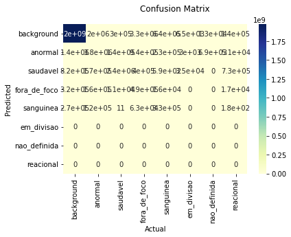
| Average | background | anormal | saudavel | fora_de_foco | sanguinea | em_divisao | nao_definida | reacional | |
|---|---|---|---|---|---|---|---|---|---|
| Accuracy | 0.993887 | 0.995437 | 0.997409 | 0.99869 | 0.997409 | 0.999332 | 0.999978 | 0.99999 | 0.999529 |
| Recall | 0.352973 | 0.9985863260107417 | 0.6131005101515782 | 0.8423639160130766 | 0.0961497625273992 | 0.2735851760264971 | 0.0 | 0.0 | 0.0 |
| Precision | 0.377342 | 0.996818 | 0.580605 | 0.526514 | 0.486677 | 0.428123 | NaN | NaN | NaN |
| Specificity | 0.951713 | 0.616664404355576 | 0.9986128335705663 | 0.9989143515457273 | 0.9997378945731008 | 0.9997761352070117 | 1.0 | 1.0 | 1.0 |
| F-Score | 0.342066 | 0.997701 | 0.596411 | 0.648 | 0.160576 | 0.333837 | 0.0 | 0.0 | 0.0 |
| FPR | 0.048287 | 0.383336 | 0.001387 | 0.001086 | 0.000262 | 0.000224 | 0.0 | 0.0 | 0.0 |
| IoU | 0.273410 | 0.995413 | 0.424918 | 0.47929 | 0.087297 | 0.200363 | 0.0 | 0.0 | 0.0 |
| IoU w/o Background | 0.170267 | NaN | NaN | NaN | NaN | NaN | NaN | NaN | NaN |
| TP | NaN | 1975632417 | 3818962 | 2404842 | 494449 | 334120 | 0 | 0 | 0 |
| TN | NaN | 10144579 | 1985892477 | 1989862488 | 1989215991 | 1993212425 | 1994835610 | 1994860564 | 1993940656 |
| FP | NaN | 6306150 | 2758590 | 2162639 | 521521 | 446310 | 0 | 0 | 0 |
| FN | NaN | 2796854 | 2409971 | 450031 | 4648039 | 887145 | 44390 | 19436 | 939344 |
# Evaluates on 1/2 size
eval_600_800 = evaluate_on_image_size((600, 800))
eval_600_800.to_dataframe()/usr/local/lib/python3.7/dist-packages/torch/nn/functional.py:3613: UserWarning: Default upsampling behavior when mode=bilinear is changed to align_corners=False since 0.4.0. Please specify align_corners=True if the old behavior is desired. See the documentation of nn.Upsample for details.
"See the documentation of nn.Upsample for details.".format(mode)
/usr/local/lib/python3.7/dist-packages/ipykernel_launcher.py:36: RuntimeWarning: Mean of empty slice
/usr/local/lib/python3.7/dist-packages/ipykernel_launcher.py:46: RuntimeWarning: Mean of empty slice Average background anormal \
Accuracy 0.993601 0.995282 0.997126
Recall 0.363836 0.9983099605390426 0.6044257884912063
Precision 0.374519 0.996936 0.57398
Specificity 0.955203 0.6449919820889249 0.9984676886538217
F-Score 0.350869 0.997622 0.588809
FPR 0.044797 0.355008 0.001532
IoU 0.277809 0.995256 0.417243
IoU w/o Background 0.175317 NaN NaN
TP NaN 493610809 1026098
TN NaN 2756410 496260766
FP NaN 1517147 761593
FN NaN 835634 671543
saudavel fora_de_foco \
Accuracy 0.998488 0.997517
Recall 0.7837067157853141 0.127642627858761
Precision 0.512609 0.51733
Specificity 0.9988260146261312 0.9997009432333079
F-Score 0.61981 0.204763
FPR 0.001174 0.000299
IoU 0.449076 0.114059
IoU w/o Background NaN NaN
TP 614814 159455
TN 497350936 497321998
FP 584569 148772
FN 169681 1089775
sanguinea em_divisao nao_definida reacional
Accuracy 0.999282 0.999972 0.999988 0.999546
Recall 0.3965993501641495 0.0 0.0 0.0
Precision 0.395295 NaN NaN NaN
Specificity 0.9996399813891071 1.0 1.0 1.0
F-Score 0.395946 0.0 0.0 0.0
FPR 0.00036 0.0 0.0 0.0
IoU 0.246841 0.0 0.0 0.0
IoU w/o Background NaN NaN NaN NaN
TP 117301 0 0 0
TN 498244791 498705829 498713991 498493756
FP 179442 0 0 0
FN 178466 14171 6009 226244 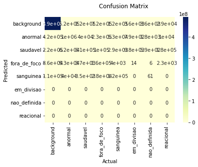
| Average | background | anormal | saudavel | fora_de_foco | sanguinea | em_divisao | nao_definida | reacional | |
|---|---|---|---|---|---|---|---|---|---|
| Accuracy | 0.993601 | 0.995282 | 0.997126 | 0.998488 | 0.997517 | 0.999282 | 0.999972 | 0.999988 | 0.999546 |
| Recall | 0.363836 | 0.9983099605390426 | 0.6044257884912063 | 0.7837067157853141 | 0.127642627858761 | 0.3965993501641495 | 0.0 | 0.0 | 0.0 |
| Precision | 0.374519 | 0.996936 | 0.57398 | 0.512609 | 0.51733 | 0.395295 | NaN | NaN | NaN |
| Specificity | 0.955203 | 0.6449919820889249 | 0.9984676886538217 | 0.9988260146261312 | 0.9997009432333079 | 0.9996399813891071 | 1.0 | 1.0 | 1.0 |
| F-Score | 0.350869 | 0.997622 | 0.588809 | 0.61981 | 0.204763 | 0.395946 | 0.0 | 0.0 | 0.0 |
| FPR | 0.044797 | 0.355008 | 0.001532 | 0.001174 | 0.000299 | 0.00036 | 0.0 | 0.0 | 0.0 |
| IoU | 0.277809 | 0.995256 | 0.417243 | 0.449076 | 0.114059 | 0.246841 | 0.0 | 0.0 | 0.0 |
| IoU w/o Background | 0.175317 | NaN | NaN | NaN | NaN | NaN | NaN | NaN | NaN |
| TP | NaN | 493610809 | 1026098 | 614814 | 159455 | 117301 | 0 | 0 | 0 |
| TN | NaN | 2756410 | 496260766 | 497350936 | 497321998 | 498244791 | 498705829 | 498713991 | 498493756 |
| FP | NaN | 1517147 | 761593 | 584569 | 148772 | 179442 | 0 | 0 | 0 |
| FN | NaN | 835634 | 671543 | 169681 | 1089775 | 178466 | 14171 | 6009 | 226244 |
# Evaluates on 1/4 size
eval_300_400 = evaluate_on_image_size((300, 400))
eval_300_400.to_dataframe()/usr/local/lib/python3.7/dist-packages/torch/nn/functional.py:3613: UserWarning: Default upsampling behavior when mode=bilinear is changed to align_corners=False since 0.4.0. Please specify align_corners=True if the old behavior is desired. See the documentation of nn.Upsample for details.
"See the documentation of nn.Upsample for details.".format(mode)
/usr/local/lib/python3.7/dist-packages/ipykernel_launcher.py:36: RuntimeWarning: Mean of empty slice
/usr/local/lib/python3.7/dist-packages/ipykernel_launcher.py:46: RuntimeWarning: Mean of empty slice Average background anormal \
Accuracy 0.993055 0.994786 0.996567
Recall 0.318694 0.9983386569545831 0.5339703401348803
Precision 0.356352 0.996407 0.538655
Specificity 0.949269 0.5975385444968293 0.9982934309246797
F-Score 0.320987 0.997372 0.536302
FPR 0.050731 0.402461 0.001707
IoU 0.253646 0.994758 0.366402
IoU w/o Background 0.147773 NaN NaN
TP NaN 123369419 247507
TN NaN 660448 124004494
FP NaN 444833 211984
FN NaN 205300 216015
saudavel fora_de_foco \
Accuracy 0.998357 0.997551
Recall 0.6919723455573299 0.12345982098425484
Precision 0.510877 0.47488
Specificity 0.9988767400953846 0.999669147195722
F-Score 0.587792 0.195971
FPR 0.001123 0.000331
IoU 0.416222 0.10863
IoU w/o Background NaN NaN
TP 146029 37214
TN 124329156 124337423
FP 139811 41151
FN 65004 264212
sanguinea em_divisao nao_definida reacional
Accuracy 0.999334 0.99996 0.999967 0.999587
Recall 0.20181204735173497 0.0 0.0 0.0
Precision 0.329996 NaN NaN NaN
Specificity 0.9997738967973337 1.0 1.0 1.0
F-Score 0.250456 0.0 0.0 0.0
FPR 0.000226 0.0 0.0 0.0
IoU 0.143155 0.0 0.0 0.0
IoU w/o Background NaN NaN NaN NaN
TP 13877 0 0 0
TN 124583063 124674962 124675935 124628565
FP 28175 0 0 0
FN 54885 5038 4065 51435 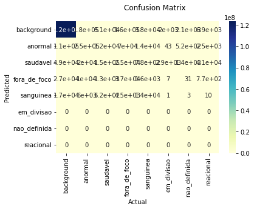
| Average | background | anormal | saudavel | fora_de_foco | sanguinea | em_divisao | nao_definida | reacional | |
|---|---|---|---|---|---|---|---|---|---|
| Accuracy | 0.993055 | 0.994786 | 0.996567 | 0.998357 | 0.997551 | 0.999334 | 0.99996 | 0.999967 | 0.999587 |
| Recall | 0.318694 | 0.9983386569545831 | 0.5339703401348803 | 0.6919723455573299 | 0.12345982098425484 | 0.20181204735173497 | 0.0 | 0.0 | 0.0 |
| Precision | 0.356352 | 0.996407 | 0.538655 | 0.510877 | 0.47488 | 0.329996 | NaN | NaN | NaN |
| Specificity | 0.949269 | 0.5975385444968293 | 0.9982934309246797 | 0.9988767400953846 | 0.999669147195722 | 0.9997738967973337 | 1.0 | 1.0 | 1.0 |
| F-Score | 0.320987 | 0.997372 | 0.536302 | 0.587792 | 0.195971 | 0.250456 | 0.0 | 0.0 | 0.0 |
| FPR | 0.050731 | 0.402461 | 0.001707 | 0.001123 | 0.000331 | 0.000226 | 0.0 | 0.0 | 0.0 |
| IoU | 0.253646 | 0.994758 | 0.366402 | 0.416222 | 0.10863 | 0.143155 | 0.0 | 0.0 | 0.0 |
| IoU w/o Background | 0.147773 | NaN | NaN | NaN | NaN | NaN | NaN | NaN | NaN |
| TP | NaN | 123369419 | 247507 | 146029 | 37214 | 13877 | 0 | 0 | 0 |
| TN | NaN | 660448 | 124004494 | 124329156 | 124337423 | 124583063 | 124674962 | 124675935 | 124628565 |
| FP | NaN | 444833 | 211984 | 139811 | 41151 | 28175 | 0 | 0 | 0 |
| FN | NaN | 205300 | 216015 | 65004 | 264212 | 54885 | 5038 | 4065 | 51435 |
Evaluation on instance-level
Instance level evaluation of the models using OpenCV Conected Components
import json
from collections import defaultdict
import numpy.ma as ma
from lapixdl.evaluation.evaluate import calculate_bbox_iou, evaluate_detection
from lapixdl.evaluation.model import BBox# Path to instance-level annotations (COCO Format)
path_ann = path_dataset / "multiclass_coco_annotations"# Loads annotations, images and class names
with open(path_ann / "clean_simplified_test.json") as f:
test_anns = json.load(f)
test_image_files = get_image_files(path_test_img)
test_anns_values = [img for img in test_anns["images"]]
cat_names = [cat["name"] for cat in test_anns["categories"]]
# Create index
imgToAnns = defaultdict(list)
annotations = defaultdict(list)
for ann in test_anns["annotations"]:
imgToAnns[ann["image_id"]].append(ann)
annotations[ann["id"]] = ann
print(cat_names)
print(codes)Running cells with 'Python 3.7.13 ('venv': venv)' requires ipykernel package.
Run the following command to install 'ipykernel' into the Python environment.
Command: '/tmp/dl-tutorials/venv/bin/python -m pip install ipykernel -U --force-reinstall'
Utils
# Mapping of predicted class ID to the GT class ID
pred_to_gt_class_map = {
1: 0, # anormal -> abnormal
2: 3, # saudavel -> normal
3: 1, # fora_de_foco -> out_of_focus
4: 2, # sanguinea -> blood
}
def mask_to_bboxes(mask_cats, mask_probs, nms_thresh, connectivity=8):
"""Converts a mask to a list of bounding boxes.
Args:
mask_cats: 2D mask array of the classes of each pixel.
mask_probs: 3D mask array of #classes x height x width with the prediction score of each class for each pixel.
nms_thresh: Non maximum supression threshold.
connectivity: Connected Components connectivity. Defaults to 8.
"""
bboxes = []
# Connected Components
bin_cls_mask = np.array(mask_cats != 0, dtype=np.int8)
connected_components = cv2.connectedComponentsWithStats(
bin_cls_mask, connectivity, cv2.CV_32S
)
(numLabels, labels, stats, centroids) = connected_components
for i in range(1, numLabels):
x = stats[i, cv2.CC_STAT_LEFT]
y = stats[i, cv2.CC_STAT_TOP]
w = stats[i, cv2.CC_STAT_WIDTH]
h = stats[i, cv2.CC_STAT_HEIGHT]
if (
h > 20 and w > 20
): # Filter out bboxes with less than 20px for width or height
# Instance mask
componentMask = (labels != i).astype("uint8")
# Identifies the predicted class for the bounding box as the most common pixel class under the instance mask
flat_clss = filter(
lambda p: p is not None and p != 0,
ma.masked_array(mask_cats, mask=componentMask).flatten().tolist(),
)
cls_idx = Counter(flat_clss).most_common(1)[0][0]
# If the most common class is the background, discards it
if cls_idx not in pred_to_gt_class_map.keys():
continue
gt_class = pred_to_gt_class_map[cls_idx]
prob_cls_mask = mask_probs[cls_idx]
# Calculates the prediction score of the bounding box as the
# mean of the scores for the predicted class under the mask of the instance
predict_score = ma.masked_array(prob_cls_mask, mask=componentMask).mean()
bboxes.append(BBox(x, y, w, h, gt_class, predict_score))
return nms(bboxes, nms_thresh)
def nms(bboxes, thresh):
"""Applies the Non Maximum Supression algorithm in a list of bounding boxes"""
ious = np.zeros((len(bboxes), len(bboxes)), float)
for i, bbox_a in enumerate(bboxes):
for j, bbox_b in enumerate(bboxes):
ious[i, j] = calculate_bbox_iou(bbox_a, bbox_b) if i != j else 1
return [
bbox
for i, bbox in enumerate(bboxes)
if is_max_score_bbox(bboxes, ious, i, thresh)
]
def is_max_score_bbox(bboxes, ious, idx, thresh):
"""Identifies the bounding box with the greater score"""
bbox = bboxes[idx]
bbox_ious = ious[idx, :]
bboxes_ious_above_thresh_scores = [
bboxes[i].score
for i, bbox_iou in enumerate(bbox_ious)
if i != idx and bbox_iou > thresh
]
return (
bbox.score >= np.max(bboxes_ious_above_thresh_scores)
if len(bboxes_ious_above_thresh_scores) > 0
else True
)
def resize_bbox(bbox, proportion):
"""Resizes a bounding box accordingly to a proportion"""
x, y, w, h = bbox
return [x * proportion[1], y * proportion[0], w * proportion[1], h * proportion[0]]
def evaluate_as_detection_on_image_size(size, score_thresh=0.5, nms_thresh=0.7):
"""Calculates the metrics for a given image size using the models trained in this notebook."""
# Setup predictor
transforms = [ImageResizer((size[0], size[1])), ToTensor(), IntToFloatTensor()]
tfms = [
[PILImage.create],
[get_mask, read_mask_and_simplify_normal_nuclei, AddMaskCodes(codes)],
]
src = Datasets(test_image_files, tfms)
test_dl = src.dataloaders(bs=1, after_item=transforms)
learn = get_learner(test_dl, f"best_model_{size[0]}x{size[1]}_stg2")
# Gets GT and predicted bounding boxes from the masks
all_gt_bboxes = []
all_pred_bboxes = []
for gt_img in test_anns_values:
file_name = gt_img["file_name"]
img_f = path_img / "test" / file_name
# Gets instance-level annotations for the image
coco_img = [f for f in test_anns_values if f["file_name"] == file_name][0]
original_img_size = (float(coco_img["height"]), float(coco_img["width"]))
resize_proportion = (
size[0] / original_img_size[0],
size[1] / original_img_size[1],
)
test_ann_ids = imgToAnns[coco_img["id"]]
gt_anns = annotations[test_ann_ids]
# Bounding boxes from GT
gt_bboxes = []
for idx, gt_ann in enumerate(gt_anns):
x, y, w, h = resize_bbox(gt_ann["bbox"], resize_proportion)
gt_bboxes.append(
BBox(int(x), int(y), int(w), int(h), gt_ann["category_id"])
)
# Predicted bounding boxes
cat, tensor, probs = learn.predict(img_f)
pred_bboxes = mask_to_bboxes(cat, probs, nms_thresh)
pred_bboxes = [bbox for bbox in pred_bboxes if bbox.score >= score_thresh]
all_gt_bboxes.append(gt_bboxes)
all_pred_bboxes.append(pred_bboxes)
# Evaluates using the LapixDL library
eval = evaluate_detection(all_gt_bboxes, all_pred_bboxes, cat_names)
eval.show_confusion_matrix()
return evalloading annotations into memory...
Done (t=0.07s)
creating index...
index created!
['abnormal', 'out_of_focus', 'blood', 'normal']
['background' 'anormal' 'saudavel' 'fora_de_foco' 'sanguinea' 'em_divisao'
'nao_definida' 'reacional']# Evaluates on full size
eval_1200_1600 = evaluate_as_detection_on_image_size(
(1200, 1600), score_thresh=0.5, nms_thresh=0.7
)
eval_1200_1600.by_class[0].show_precision_recall_curve()
eval_1200_1600.to_dataframe()/usr/local/lib/python3.7/dist-packages/torch/nn/functional.py:3613: UserWarning: Default upsampling behavior when mode=bilinear is changed to align_corners=False since 0.4.0. Please specify align_corners=True if the old behavior is desired. See the documentation of nn.Upsample for details.
"See the documentation of nn.Upsample for details.".format(mode)
/usr/local/lib/python3.7/dist-packages/ipykernel_launcher.py:36: RuntimeWarning: Mean of empty slice
/usr/local/lib/python3.7/dist-packages/ipykernel_launcher.py:46: RuntimeWarning: Mean of empty slice Average abnormal \
Accuracy 0.288088 0.354078
Recall 0.371788 0.44702380952380955
Precision 0.567877 0.630034
F-Score 0.394383 0.522981
IoU 0.107166 0.244744
TP NaN 751
FP NaN 441
FN NaN 929
TN NaN NaN
Average Precision NaN 0.361262
11-point Average Precision NaN 0.379062
out_of_focus blood \
Accuracy 0.022031 0.154616
Recall 0.02239213544511196 0.2077727952167414
Precision 0.577465 0.376694
F-Score 0.043113 0.267823
IoU 0.015409 0.048896
TP 41 139
FP 30 230
FN 1790 530
TN NaN NaN
Average Precision 0.014138 0.084791
11-point Average Precision 0.090909 0.11216
normal
Accuracy 0.591871
Recall 0.8099652375434531
Precision 0.687316
F-Score 0.743617
IoU 0.119616
TP 699
FP 318
FN 164
TN NaN
Average Precision 0.739048
11-point Average Precision 0.741094 

| Average | abnormal | out_of_focus | blood | normal | |
|---|---|---|---|---|---|
| Accuracy | 0.288088 | 0.354078 | 0.022031 | 0.154616 | 0.591871 |
| Recall | 0.371788 | 0.44702380952380955 | 0.02239213544511196 | 0.2077727952167414 | 0.8099652375434531 |
| Precision | 0.567877 | 0.630034 | 0.577465 | 0.376694 | 0.687316 |
| F-Score | 0.394383 | 0.522981 | 0.043113 | 0.267823 | 0.743617 |
| IoU | 0.107166 | 0.244744 | 0.015409 | 0.048896 | 0.119616 |
| TP | NaN | 751 | 41 | 139 | 699 |
| FP | NaN | 441 | 30 | 230 | 318 |
| FN | NaN | 929 | 1790 | 530 | 164 |
| TN | NaN | NaN | NaN | NaN | NaN |
| Average Precision | NaN | 0.361262 | 0.014138 | 0.084791 | 0.739048 |
| 11-point Average Precision | NaN | 0.379062 | 0.090909 | 0.11216 | 0.741094 |